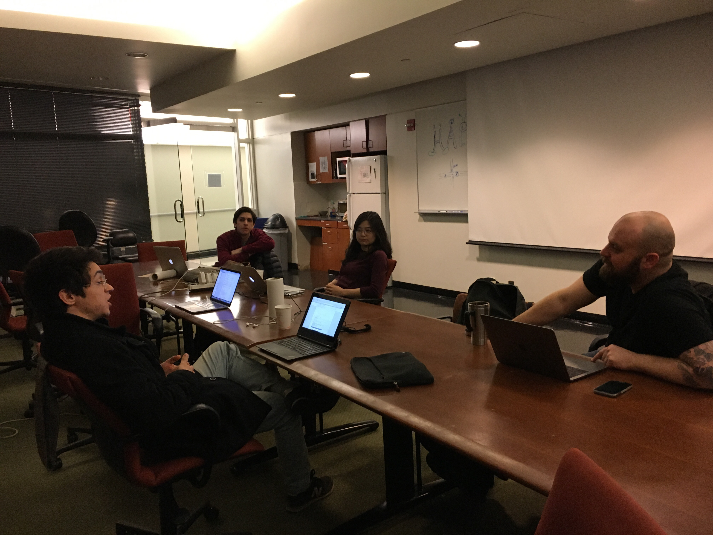

Posts
Hackathon 2018
by Nick Giangreco
We had another very successful hackathon! Just to reiterate, what we call a "hackathon" is a bunch of people sitting in one space, discussing together and working on projects for their own research or for a personal interest. We got a lot done, both in working on projects and in brainstorming our Data Science group organization and structure.
First, we had a variety of projects that were worked on. I worked on reformatting this group's website: making page scrolling gradual (easing). Doesn't seem like a lot but it was a handful, especially with making sure everyone else was making progress on their project. A member Corentin was working on a very cool project, which included figuring out how to optimize his plant watering automatically for his indoor garden by changing the "light profile" over his plants. We had some fun discussing some open-form functions and double integrals! haha A lot of people had some RNA-Seq data from their lab, and trying to figure out how to either align to the genome, perform differential expression, or analyze/visualize the differential gene data.
Second, our hackathon today was shorter than our last hackathon (only 6 hours instead of 12 hours). This is because we want to have more frequent hackathons (about once a month). We think this amount of time is more doable for people for the hackathon frequency.
Third, we had a good brainstorm for the group's outlook, purpose, and structure moving forward. This group offer's a useful space for biomedical trainees to learn and work on data analysis/data science, where this space is non-existant without this group. This group offers the space, support structure, and community that enables data analytics to pervade the research life of trainees as well as pervade other aspects of trainees development (e.g. career or personal interest). However, this group should not provide "classes" or "lessons" to teach. We are not equipped for this task, nor should we be. We are much more suited to facilitate trainees in their process, whatever that may be. Thus, we need to solely provide the space to support trainees in their process. This includes the monthly hackathons, as well as weekly "community sessions". These "community sessions" should be times in which trainees, at any skill level at any data science-learning stage, to come together to work on whatever they want to work on. Everyone should work at these sessions because when trainees all work in the same space, they can share their struggles, brainpower, advice and encouragement so that the whole community benefits. This will strengthen the trainee community, collaboration, and data analytics in daily research efforts at CUMC.
Fourth, we will transition to a more collaborative and persistant group site. Unfortunately, I am the only contributor to this site. Because we want others to contribute, we need to make the site more amenable to others which means not making a website manually. It's been great for me to learn how to do it, though now this group requires another, more modifiable site. Also, we want to have a site that provides resource to the CUMC trainee community for doing common, useful, and much need data analytics. And we need for community members to be able to contribute themselves, and weigh in on the most useful material as well as material most useful for the task at hand. I will be working on putting up a group Wikipedia site that others can contribute to. Slack will be still useful for us because it will provide the instantaneous messaging we need to communicate, but the Wikipedia will serve for long-term storage of resources for doing data science. So please stay tuned for that!
We will now hold weekly meetings on Mondays, 530pm-730pm in VEC 1201B. People can come and go as they see fit-think of these sessions as community data science study halls or office hours. We we annouce the monthly hackathons on Slack.
I am very happy to see how our group is evolving and serving the CUMC trainee community. Thank you all for being part of this journey with me!
Cheers!
P.S. We had a couple more people in the pictures. Sorry if I didn't capture you-I only took 2 pictures earlier in the day

